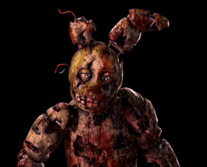

Donald is known for his semi-intelligible speech and his mischievous, temperamental, and pompous personality.

Mickey Mouse is an iconic anthropomorphic mouse characterized as a cheerful, optimistic, and adventurous hero who uses his quick wit and ingenuity to overcome challenges.
Chica primarily refers to the fictional animatronic chicken from the horror media franchise Five Nights at Freddy's, or the Spanish slang word for a girl or young woman.

Springtrap is a decaying, bipedal rabbit animatronic fused with the reanimated corpse of the child killer William Afton from the Five Nights at Freddy's series.